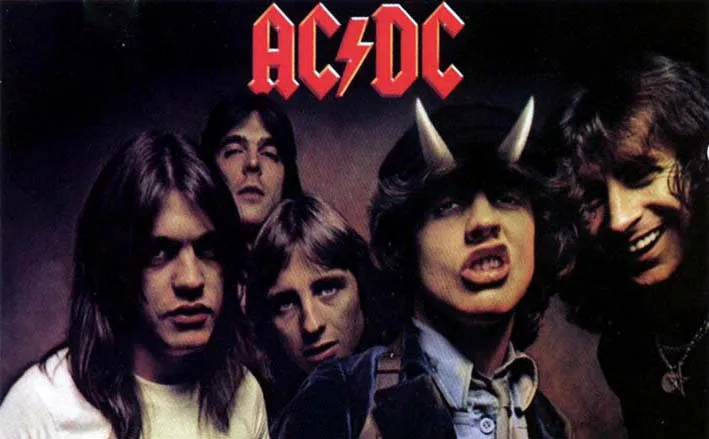

ACDC
Em novembro de 1973, Malcolm e Angus Young formaram o AC/DC e recrutaram o baixista Larry Van Kriedt, o vocalista Dave Evans e o baterista Colin Burgess. A banda se apresentou pela primeira vez em um clube chamado Chequers em Sydney em 1973, tocando músicas do Chuck Berry
